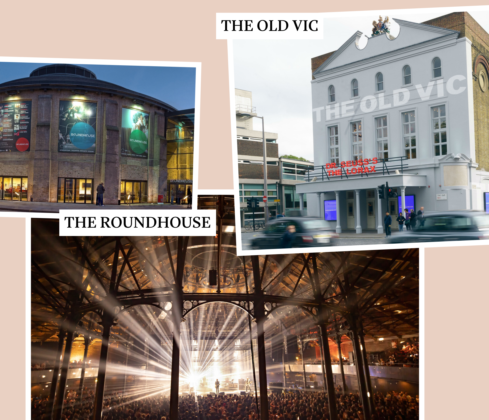
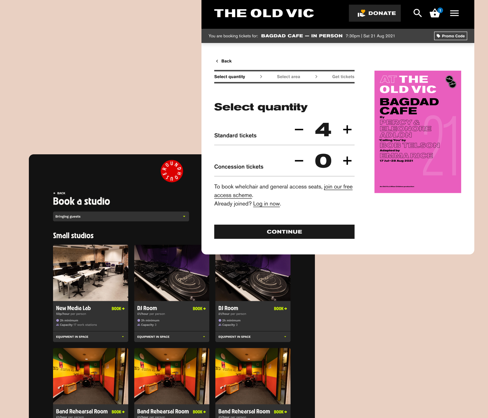
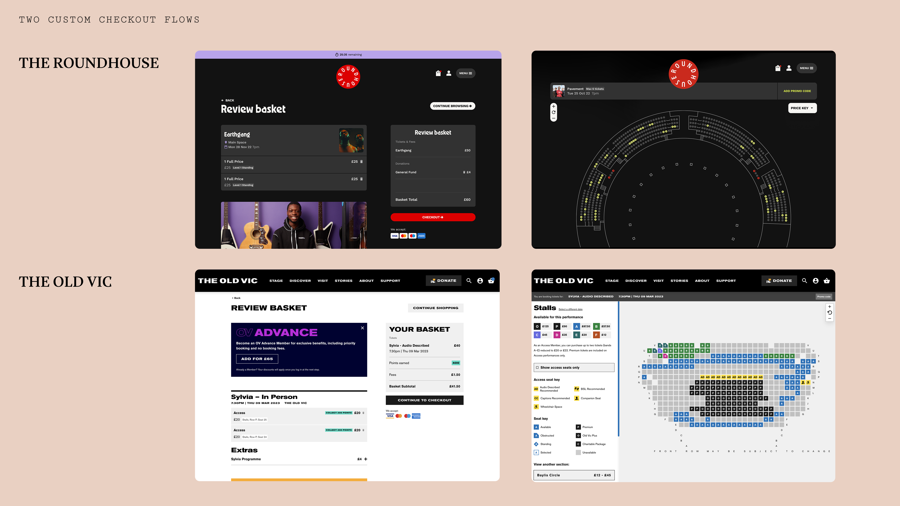
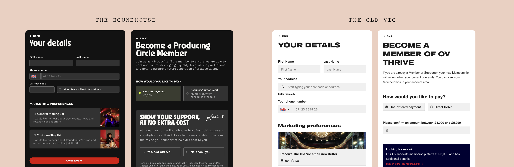
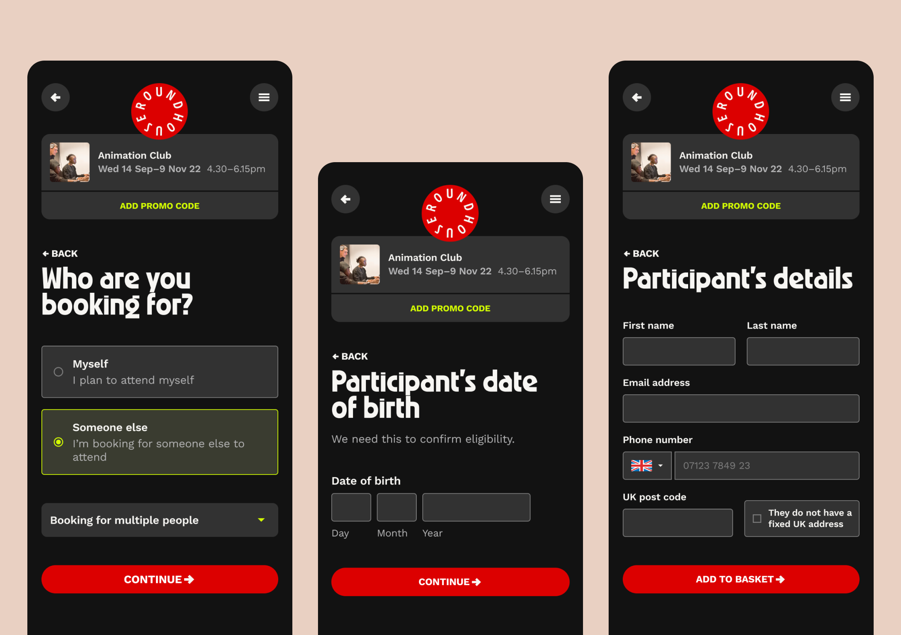
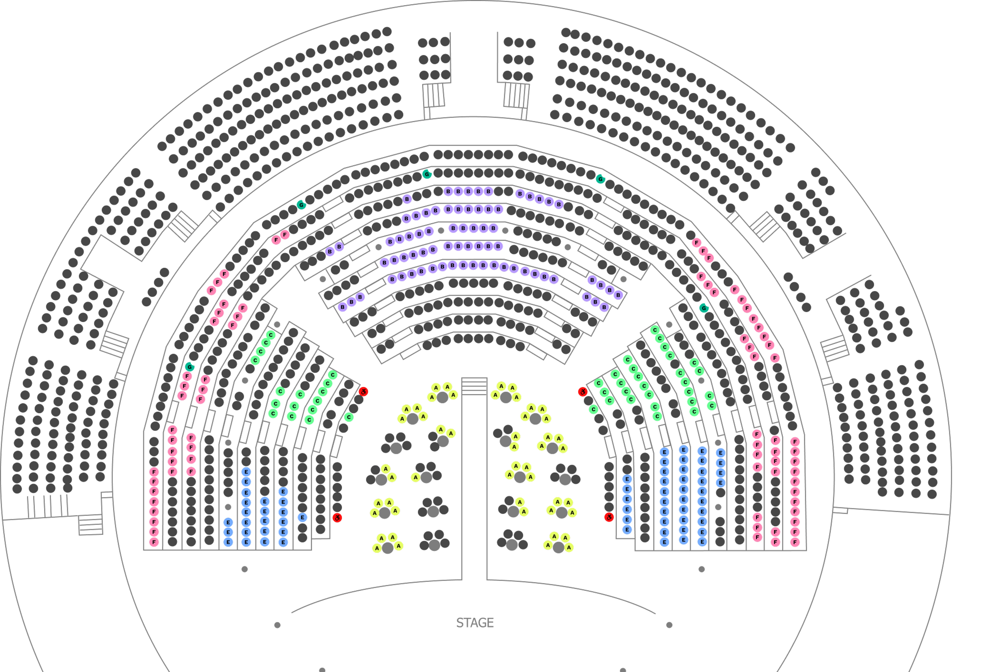

Overview
I led the design execution of two major digital transformations for The Old Vic and The Roundhouse — two of London's most iconic cultural venues. Both institutions relied on Skyway, a proprietary white-label event engine that integrated directly into their CRM system, Tessitura.
While the functional plumbing was standardised, the user journeys were anything but. My challenge was to architect branded, friction-free checkout flows that respected complex business logic while maintaining the integrity of two very different brands.

One reusable component system underpinning two entirely different brand experiences — the key to scalable delivery

Two of London's most iconic cultural venues — each with a distinct brand identity and complex ticketing requirements
The challenge
Both venues had sophisticated requirements far beyond a standard e-commerce checkout. The Old Vic's flow needed to handle tiered membership upsells with inline promotional messaging, loyalty points, access ticketing schemes (with separate eligibility paths), and charitable donation prompts. The Roundhouse added complex room booking flows with participant details, youth mailing list opt-ins, and date-of-birth verification for age-restricted programmes.
All of this had to be architected within the structural constraints of Tessitura — a highly specialised CRM with rigid data schemas — while feeling intuitive and native to each venue's brand.

Two distinct brands, one shared platform — the challenge was making each feel entirely its own
A fully branded experience
The Old Vic's brand is heavily typographic and monochrome — precise, theatrical, authoritative. The Roundhouse is dark, bold, and high-energy — reflecting its music and youth culture heritage. Both had to be translated into a purchase path that felt like a seamless extension of the main venue website, not a third-party bolt-on.
In both cases, considered typographic treatment and careful colour application were crucial — balancing brand expression with the demands of information-dense checkout pages that need to feel intuitive and easily scannable. I worked with engineering to establish a base of tested, reusable components that could be customised to fit the needs of both clients.

Two distinct brands, one shared platform — the challenge was making each feel entirely its own
Intelligent data collection
Both venues required sophisticated form architecture — from complex room booking requirements at the Roundhouse to legal declarations and charitable donation flows at The Old Vic.
To prevent form fatigue, I used a progressive reveal strategy: secondary information — such as accessibility requirements, participant details, or date-of-birth verification — was only surfaced based on the user's previous selections. This kept the interface focused on the primary task at hand and significantly reduced perceived complexity.

Two distinct brands, one shared platform — the challenge was making each feel entirely its own
Technical constraints
I had to work within the structural parameters of Tessitura — a highly specialised CRM with rigid data schemas. I collaborated closely with backend engineers to map every front-end input to a specific Tessitura attribute.
When the CRM lacked a native field for a UX requirement, I worked with the technical team to architect custom data hooks — capturing and storing specialised user data without compromising the stability of the core ticketing engine. This required translating UX intent into technical feasibility in close collaboration with engineering throughout the project.
Outcomes
Both purchase paths launched on schedule to high client satisfaction. While the agency context limits long-term data access, initial performance indicators were overwhelmingly positive across two fronts:
Conversion
Both venues saw an immediate increase in checkout completion rates following launch — attributed to reduced friction across the booking flow and improved form architecture.
Support reduction
Optimised data collection through well-paced, efficient form design reduced the volume of customer support inquiries received by box office staff post-launch.
Operational efficiency
Mapping UI inputs directly to Tessitura CRM requirements reduced the manual data cleaning previously required by venue staff — freeing them to focus on high-value member relations.
Reflection
This project pushed me to think carefully about the intersection of brand expression and functional clarity — two things that can easily work against each other in a complex checkout flow. The solution was always in the components: designing a reusable base that could be dressed for either brand without compromising the underlying UX logic.
Working within the constraints of a third-party CRM also sharpened my ability to collaborate with engineers early and often — turning technical limitations into design decisions rather than late-stage surprises.

One reusable component system underpinning two entirely different brand experiences — the key to scalable delivery